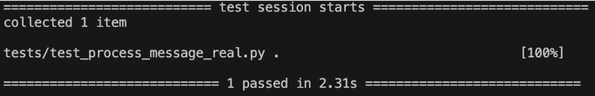
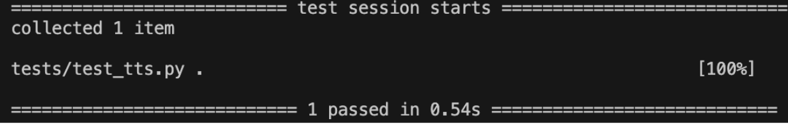
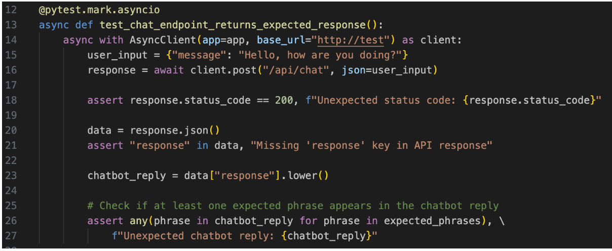
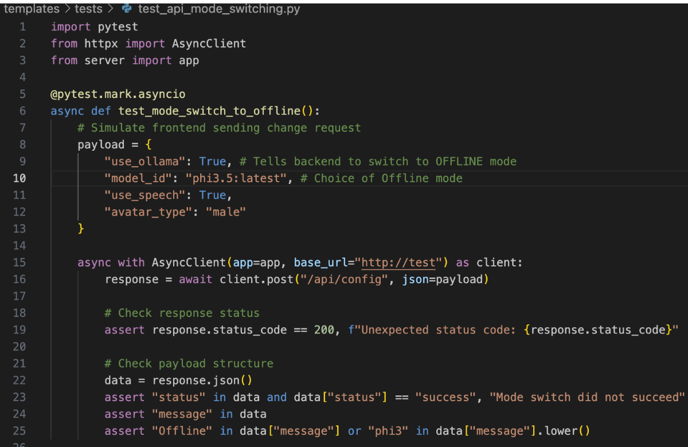

Our approach combined automated testing and real-world user evaluations. Unit tests were employed to ensure the accuracy of core backend functions, while integration tests validated seamless interactions between memory retrieval, speech synthesis and mode switching through our API. Beyond automated testing, we also conducted User Acceptance Testing, which plays a crucial role in evaluating and refining the system to meet both technical requirements and human-centered design goals.
We implemented unit testing for two core components of our backend system to verify that individual parts (chatbot response and audio synthesis) work as expected across both online and offline configurations, thereby ensuring reliable performance and user-friendly experience for all users.
Our aim is to verify that the chatbot generates relevant responses.
We decided to test on process_message(). This is a function that handles user input and generates appropriate AI responses.
We tested both the online and offline model configurations. The model is determined by a flag in config.py file:
USE_OLLAMA = True # Activates offline mode (using Phi-3 or IBM Granite models)
USE_OLLAMA = False # Activates online mode (using Azure GPT)By toggling this flag, we were able to run the same test cases. This ensures consistent chatbot behavior across both configurations.

Test Duration: ~1.9s (Offline Model), ~2.3s (Online Model)
Result: Passed in both configurations
Upon greeting, we verified that the returned message contained at least one of the following key phrases: ?hello?, ?I?m here?, ?ready to chat?, or ?doing well?. This confirms that the response is appropriate in both models.
Our aim is to verify that Azure Speech Services successfully convert text into audio.
We decided to test on text_to_speech_to_bytes(). This function converts AI-generated text into spoken audio using Azure Text-to-Speech (TTS) services.
This helps ensure that the function returns a non-empty audio file in bytes format.
This confirms that audio responses are generated by backend and it can be played by frontend.
This test essentially validates the real-time interaction between frontend input and backend processing.
By testing the live /api/chat endpoint, we ensured that the backend returns a properly formatted JSON response and that FastAPI routing and request handling function correctly.
This test ensures that users can switch between lightweight offline models and more powerful online models.
A successful API call indicates that the chatbot has been reinitialized and the mode switch has been successfully. It also confirms that speech settings and avatar configuration are updated without restarting the server.
We collected feedback from a diverse group of testers which include students, working profession and an elderly user.
| Tester | Age | Background | Tech Familiarity |
|---|---|---|---|
| Louis | 19 | UCL Philosophy Undergraduate, Avid reader, Enjoys computer games | Medium |
| Lina Lee | 24 | UCL MSc Computer Science Student, Great passion with technology, Tech-savvy | High |
| Michael | 40 | Professional Photographer, Loves travelling, tools and automation | Medium-High |
| Dorothy | 72 | Retired, lives alone, Curious about AI, inspired by household robot | Low |
| Theme | Test Case | Feedback | Testers | Ratings |
|---|---|---|---|---|
| Launch and Initial Interaction | Greeting on startup | No automatic greeting other than waving; users had to say 'hello' first to trigger text interaction. | Dorothy, Louis, Michael | ✓✓✓✓ |
| Navigation on first use | All testers found buttons intuitive. Dorothy needed brief help but could navigate confidently afterward. | Lina, Dorothy, Louis | ✓✓✓ | |
| Speech Accessibility | Speech-to-Text Accuracy | Speech features are easy to access. System could easily capture words, high accuracy. | Dorothy, Louis | ✓✓✓✓ |
| Text-to-Speech audio clarity | Clear voice output, helped comprehension. | Dorothy, Lina | ✓✓✓✓ | |
| Conversational Clarity | Basic chat flows | Bot consistently responded warmly. | Louis, Michael, Lina | ✓✓✓✓ |
| Interpret Users Correctly | Minor errors in understanding long sentences but could be clarified. | Michael, Lina | ✓✓✓ | |
| Mode Switching | Switch to offline mode | Dorothy could not switch modes independently. Needed assistance from another user. Other testers managed fine. | Dorothy, Louis, Michael, Lina | ✓✓✓ |
| Switch to online mode | Managed fine. Slight note: settings were hidden under a menu. | Louis, Michael, Lina | ✓✓✓ | |
| Memory and Personalization | Memory retrieval | Bot remembered tone preferences and users' hobbies. It improves conversational depth. | Louis, Michael | ✓✓✓ |
| Avatar personalization | Only male/female avatars available. Animations repeated. A variety of avatar selection and dynamic expression may be good. | Dorothy, Lina | ✓✓ | |
| User Interface and Accessibility | Font and layout | Clean layout with well-contrasted fonts made reading easy. Buttons were clearly labeled, easy to distinguish. | Dorothy, Lina, Michael, Louis | ✓✓✓✓ |
| Response on Clicks | Most actions gave instant feedback. Slight delay with avatar animations on some laptops. | Lina, Louis | ✓✓✓ |
| Category | Score (Out of 4) |
|---|---|
| Launch and Initial Interaction | 3.5 |
| Speech features | 4.0 |
| Conversation Quality | 3.75 |
| Mode Switching | 3.0 |
| Memory and Personalization | 2.5 |
| UI and Accessibility | 3.75 |
Overall Score: 3.5 / 4.0
We are glad to see that our test users responded positively and enthusiastically while interacting with Companio. The feedback on both strengths and areas for improvement has been incredibly valuable. These insights have guided and will continue to guide us as we refine Companio into a more thoughtful, accessible, and supportive companion. We hope to provide a warm and intuitive AI experience especially for elderly users.